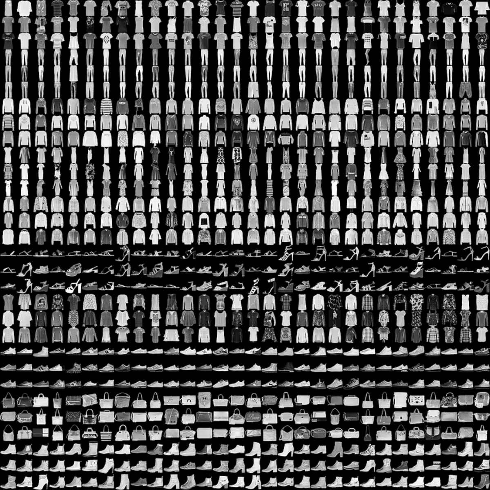

- функция потерь — алгоритм для измерения того, насколько далеки выходные данные модели от ожидаемого результата
- функция оптимизации — алгоритм настройки внутренних параметров модели с целью минимизации потерь
- параметры — используются для мониторинга этапов обучения и тестирования
Импорт набора данных Fashion MNIST
Для обучения создаваемой нейронной сети будем использовать набор данных Fashion MNIST, содержащий 70000 черно-белых изображений размером 28 на 28 пикселей. Каждое изображение связано с одной меткой (названием предмета одежды) из 10 классов.

Обратиться к набору данных MNIST можно непосредственно через TensorFlow, используя API:
dataset, metadata = tfds.load('fashion_mnist', as_supervised=True, with_info=True)
train_dataset, test_dataset = dataset['train'], dataset['test']
Загрузив данные, получим метаданные, а также обучающий набор данных (train_dataset) и тестовый набор данных (test_dataset).
Изображения в этих наборах представляют собой массивы 28 на 28, со значениями каждого пикселя в диапазоне [0, 255].
Метки представляют собой массив целых чисел в диапазоне [0, 9] и соответствуют одному из 10 классов одежды.

Поскольку имена классов не включены в набор данных, их нужно присвоить и сохранить, чтобы позже использовать при построении изображений:
class_names = metadata.features['label'].names
print("Class names: {}".format(class_names))
Получим следующий вывод:
Class names: ['T-shirt/top', 'Trouser', 'Pullover', 'Dress', 'Coat', 'Sandal', 'Shirt', 'Sneaker', 'Bag', 'Ankle boot']